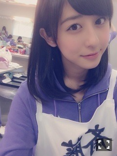
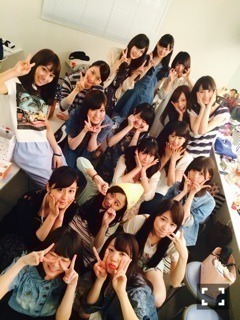

| 2014/06 21 Sat | お久しぶりです(´> ∀<｀)ゝ |
ちはるーむへようこそ\( ˆoˆ )/
今更感ありますが。。
プリンシパル、無事、終わりました！！

長かったよ〜〜
最終的に、私は
ロザリオ2回
エステル2回
メグ
エリザベート
次女2
として、二幕に出演させていただきました！！
最初の勢いのまま行けてたら
もうちょっといいところまでいけたかなって
少し悔しい気持ちもありますが。、。
なにより、無事に終わってよかったです(｡-_-｡)
この公演を通して、コントの楽しさ、コントの難しさ、演技の楽しさ、演技の難しさ...
色々と学びました。
今回の公演を通して、少しでも自分に残るものがあったように感じるので
この経験をバネに、これからも頑張っていきたいです！！
そしてこの公演、みなさんのコメントや、励ましが力になっていました。
本当にありがとうございました！！
入り口に飾ってあったお花も嬉しかったですありがとうﾟﾟ\(´O`/)°゜ﾟ♡

苦楽を共にした楽屋メンバー♡笑
そして、個人PVの予告編が公開されましたね！！
私のテーマは「シンメトリー」
本編では何をしているのか？？
予告編いっぱい見て、考えてみてね！！
そしてアンダー曲、「ここにいる理由」
乃木坂には、今までこんな曲無かった！！
だからこそ大切にしたいと思います

いっぱい聞いてねヽ(^^)ﾉ
いま握手会の準備してます！
握手会の話は、またつぎ書くね！！
ばいるんっ
るんるんっ
ちはるんっ
(´>∀<｀)ゝ
コメント(178)
2014/06/21 14:42